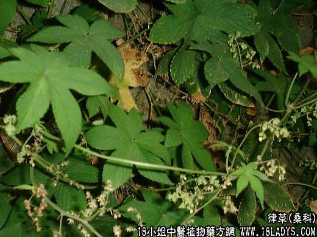

【中药概述】
葎草为桑科草本植物律草的全草。苦、甘，寒。归肝、肺、大肠、膀胱经。
1．清解热毒：用于肺热咳嗽，肺痈（肺结核），盗汗，热咳，胸闷等，可配清肺药等同用。
2．湿热涩痛：用于小便不利，水肿，热淋，石淋，尿血，腹泻痢疾，疟疾等。
3．祛风止痒：用于湿疹，皮肤瘙痒等。
【药效鉴别】
本品清热解毒，利湿消瘀，与白藓皮合用祛湿解毒治痒疮功效较佳。
【临证应用】
1.治上呼吸道感染、慢性气管炎、肾炎。取本品500g，加水1000毫升，煮沸30分钟，煎至一半时，饮服；
2.治肺结核，属阴虚型，干咳少痰，咯痰带血，口燥咽干，午后潮热，骨蒸盗汗。取本品150g、百部 白及 夏枯草各50g，煎浓汁后加糖200g，日服2次。
【化学成分】
含木犀草素、葡萄糖甙、胆碱及天门冬酰胺等。
【用量用法】
本品9——28g，水煎服，或入剂。